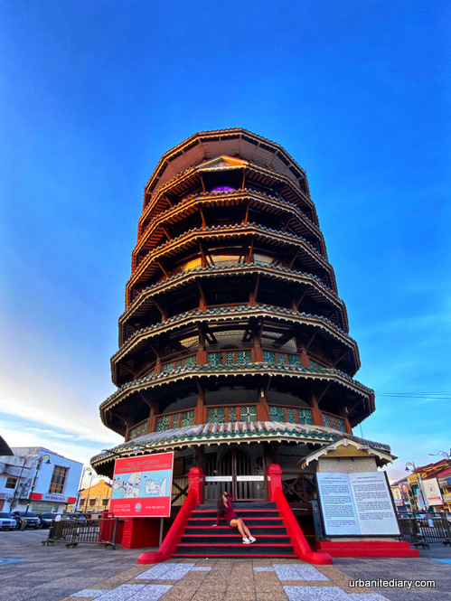
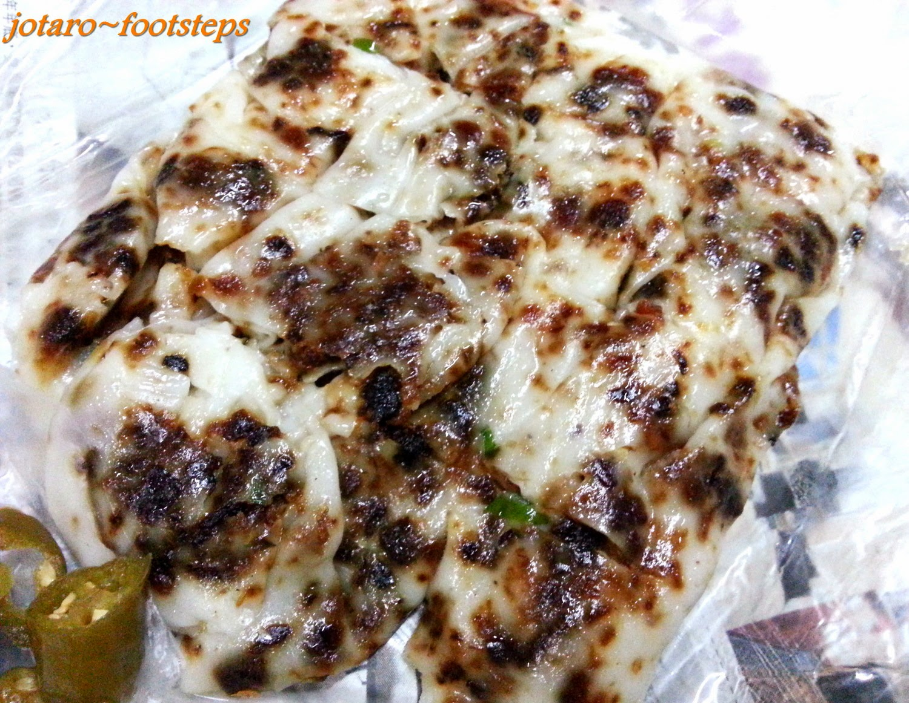

Built in 1885 by contractor Leong Chin Chong, this 25.5-meter pagoda-style clock tower leaned due to soft soil and the weight of its water tank.

Unlike the standard version Chee Cheong Fun, this local variant is served dry without sweet sauce.
In Malaysia, "Sky Mirror" refers to a unique natural phenomenon where a massive sandbank emerges from the sea during low tide.
Comment
I really like Teluk Intan for its slow paced live and harmony, plus the food is delicious
Vanessa